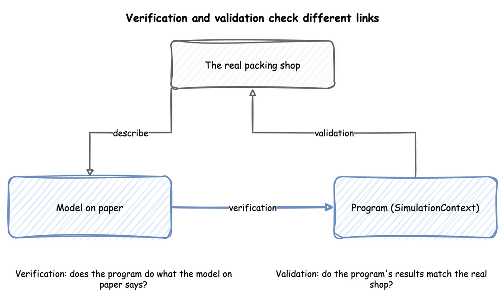

Checking and Validating
A model that runs is not a model that is right. This page explains how to check a model in two ways that need different evidence: verification asks whether the program does what the model on paper says, and validation asks whether that model is a good enough picture of the real system for the question. Both are done on the way through a simulation study, and neither is finished by one test.
The two terms, and the trace, the reasonableness checks, review by someone else, calibration and the three-step approach, follow Banks, Carson, Nelson and Nicol, Discrete-Event System Simulation, chapter 10, and Law, "How to Conduct a Successful Simulation Study" (Winter Simulation Conference, 2003). We read the chapter through lecture notes on it, and the paper itself. The checks with Little's law, with a formula and with fixed gaps, the extreme-condition tests, the explanations and the shop examples are our own.
Verification and Validation
Banks et al., as the lecture notes give it, put the difference briefly: verification is building the model correctly, and validation is building the correct model. Look at the diagram for which link each one checks. Verification compares the program with the model on paper, which says the arrivals, the service times and the number of packers. Validation compares the program's results with the real shop.

A model can pass one and fail the other. A program can follow the model on paper exactly, and the model can leave out the thing that makes the real shop slow. A model can also describe the shop well and have a bug in its code. Law adds credibility: a model is credible when the people who will use its results accept them, and walking them through the assumptions is how a study earns it.
Read the Trace
The cheapest check is to read what a run did. A trace is the record of each event in time order. Run a few orders and follow one by hand: it should arrive, wait while the packer is busy, start when the packer is free and finish after the service time. The records of a desflow run are a trace, and First Simulation reads the first of them. The lecture notes on Banks et al. list a trace, examining the output for reasonableness under a variety of input settings, and having someone else check the model among the ways to find errors in a program.
Work a Case by Hand
Choose inputs for which the answer can be worked out on paper, run them, and compare. Constant gaps and constant service times make every number exact. This function runs the shop with them:
With one order every 3 seconds and 1.5 seconds to pack, orders arrive at 3, 6 and on to 3,597 seconds, so 1,199 arrive in the hour. A packer is free each time, so no order waits, and the packer works 1,199 × 1.5 seconds of the 3,600, which is 49.96%. With one order every second the packer can never keep up: 3,599 orders arrive, 2,399 finish, and 1,200 are in the shop at the end. The code checks each of these numbers:
The second case is also an extreme-condition test: with demand above capacity, the queue must grow for as long as the run lasts. A model that cannot show this has a fault. Two more cases of this kind are no arrivals, which should give no orders started or finished, and a huge number of packers, which should give no waits. The code runs both, with one order every 10,000 seconds in an hour and with 100 packers for an order a second:
Check the Statistics Against Each Other
Some relations hold for every model that settles, so they test the statistics without any hand calculation. Little's law is the main one: the average number of orders in a system equals the arrival rate times the average time an order spends in it. The queue length, the arrival rate and the mean wait are measured separately, so if they disagree, one of them is wrong. Queueing Basics runs this check on the shop's busy hour: a queue of 3.417 orders against 1.782 orders a second times a wait of 1.9175 seconds, which is 3.417. The code runs that busy hour and checks the figures:
| docs/snippets/pages/checking_and_validating.py:little | |
|---|---|
Measuring a Run shows the same idea on a shorter run, and the counts in Statistics must also add up: when no order balks or reneges, the orders started over the whole run are those finished plus those still in the shop.
Check Against a Formula
For a simple case there may be a formula. One packer with exponential gaps and service times at utilisation 0.75 has a mean wait of 4.5 seconds when the service time averages 1.5 seconds. A run of the model, repeated with several seeds, must produce an interval that contains it. Queueing Basics gives the formulas for one and several servers, and shows runs of the shop within their intervals. A formula tests the part of the model it covers. It cannot test priorities, breakdowns or changing demand, which is why those are the parts to check by hand and by comparison with the real shop.
Compare With the Real Shop
Validation needs evidence from the real system. Law suggests comparing the model's results with the existing system's, where there is one, along with a walk-through of the assumptions by the people who know the system, and sensitivity analysis. For the shop, give the model the inputs of a real day and compare its mean wait, queue length and utilisation with what happened. They need to agree closely enough for the decision, not exactly.
The lecture notes on Banks et al. describe calibration as iterative: compare the model with the real system, adjust it, compare again. They also have three steps, which are to build a model with high face validity, to validate the model's assumptions, and to compare input-output behaviour with the real system's data, so the assumptions and inputs are checked and not only the outputs. Choosing Inputs and Fit the Inputs cover the inputs, and Local Replay runs a model on the arrivals of a real trace. When the real system does not exist yet, as for a proposed design, there is nothing to compare with. Then validity rests on the assumptions and on sensitivity analysis.
Test the Sensitivity
A model has inputs that are estimates. Sensitivity analysis changes them and sees whether the answer changes. If a 6% change in the arrival rate changes the decision, the estimate needs more work. If it does not, it does not. Parameter Sweeps does it for the shop: with three packers a rate 6% above the estimate more than doubles the mean wait to 5.55 seconds, and with four packers the wait is at most 0.35 seconds at every rate, so the choice of four packers holds whatever the demand within the range.
What to Check, and When
Check as you build, not at the end. After each part is added, run a case with a known answer. Before the experiments, check the statistics against each other and against a formula where one exists. Before the results are used, compare with the real shop or say that no comparison was possible. Checking a Model applies these checks to the shop, written as tests. Readiness and Reporting lists what a model needs before its results are trusted, and Common Mistakes lists the errors these checks find.